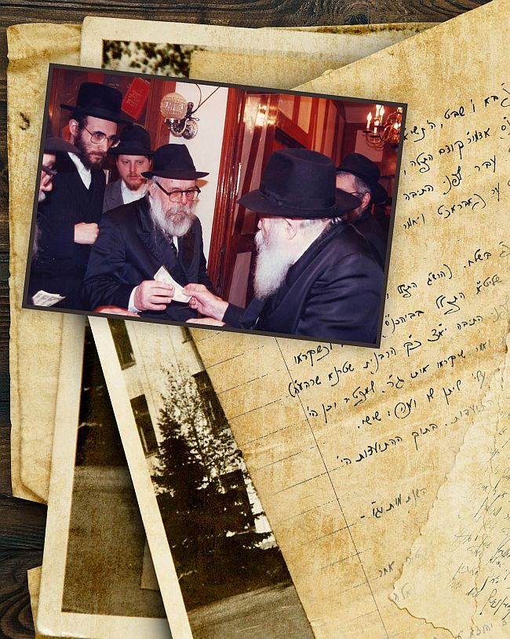

יותר משישים שנה שכבו עשרות מעטפות חומות, דהויות, בביתו של הרה”ח ר’ שלום חסקינד ע
יותר משישים שנה שכבו עשרות מעטפות חומות, דהויות, בביתו של הרה”ח ר’ שלום חסקינד ע”ה מבלי שאיש מבני הבית הבחין כי במעטפות אלו נמצאים אוצרות יקרים מפז שכתב ורשם הרב חסקינד בימי עלומיו, בין השנים ת”ש–תשי”ב, כששהה ב–770 והסתופף במחיצת אדמו”ר הריי”צ ובתחילת נשיאותו של הרבי מה”מ * לאחרונה התגלו אוצרות פז א
יותר משישים שנה שכבו עשרות מעטפות חומות, דהויות, בביתו של הרה”ח ר’ שלום חסקינד ע”ה מבלי שאיש מבני הבית הבחין כי במעטפות אלו נמצאים אוצרות יקרים מפז שכתב ורשם הרב חסקינד בימי עלומיו, בין השנים ת”ש–תשי”ב, כששהה ב–770 והסתופף במחיצת אדמו”ר הריי”צ ובתחילת נשיאותו של הרבי מה”מ * לאחרונה התגלו אוצרות פז אלו ונחשפו לאור השמש * במלאת עשר שנים לפטירתו של הרב חסקינד, שחל השבוע

תארו לכם שאתם הולכים ברחוב ומוצאים פתאום תיק מלא בשטרות מגוהצים של 100 דולר כל אחד… או יותר מזה, דמיינו שאתם מוצאים שקית ובה מאה שטרות של דולר שכתוב עליהם “קיבלתי מידיו של כ”ק אדמו”ר שליט”א” ואין שום סימנים מזהים. זה שלכם!
משהו כזה, אבל הרבה יותר מכך, נמצא בביתו של החסיד הרב שלום חסקינד ע”ה, כאשר יום אחד נמצא באחד מארונות הבית חבילה של מעטפות חומות גדולות, דהויות וישנות, ובהם אוצר יקר מפז של כתבי יד של הרבי, כמו למשל: עמודים רבים ובהם ‘הנחות’ משיחות קודש של אדמו”ר הריי”צ עם הגהות רבות וצפופות בכתב ידו של הרבי, טורים–טורים של מראי מקומות בכתב ידו של הרבי על שיחות שטרם יצאו אז לאור עולם. עשרות רבות של מכתבי קודש מאדמו”ר הריי”צ ומהרבי, יומנים מרתקים משנות הנשיאות האחרונות של אדמו”ר הריי”צ בארה”ב והשנתיים הראשונות של הרבי כנשיא הדור השביעי.
מלבד זאת, נמצאו עוד עשרות מכתבים אישיים שכתב הרב שלום חסקינד לידידו הגאון החסיד הרב משה אשכנזי בשנים קדמוניות, כשקהילת חב”ד המיתולוגית ב’נחלת בנימין’ הייתה בשיא תפארתה, ובהם נושאים רבים ומגוונים.
ילאה העט מלתאר את רוחב ועומק השפע האוצר הגדול שכמו חיכה שישים וחמש שנים ארוכות ליום בו הוא ייחשף ויתגלה.
מי שהכיר את הרב שלום חסקינד, הכיר חסיד דגול, תלמיד חכם עצום ובעל זיכרון מופלא, שזכה להסתופף כעשר שנים בצלו של אדמו”ר הריי”צ, מאז הגיע לארצות הברית ועד להסתלקותו, ת”ש–תש”י, ולאחר מכן שנתיים נוספות, הראשונות בנשיאותו של הרבי מה”מ. פיו של הרב חסקינד שפע תמיד דברי תורה וחסידות, הגות ואמרי שפר - אך כמעט מעולם לא שיתף בחוויות של השנים הראשונות. כל הניסיונות של ידידיו ואוהביו לדובבו בזיכרונות אלו, עלו בתוהו.
“כשבעלי היה מדבר, הוא היה מרתק”, מספרת מרת חסקינד ביום שני השבוע, יום היארצייט העשירי שלו, לכותב השורות, “אך בקשר לזיכרונותיו, הוא היה חסכן במילים; כמעט ולא סיפר כלום. גם להעלות את הדברים על הכתב, סירב”.
למעשה, רק בשנה האחרונה לחייו, החל לפתוח מעט את סגור לבו, ונכדיו הרבים, שבט ברך ה’, היו מגיעים לביתו במוצאי שבתות, ואז היה פותח ומספר להם על רגעים מיוחדים שזכה להתבשם בהם בצלם של רבותינו נשיאנו ב–770. אלו היו רגעים מיוחדים בהם הוא נפתח מעט”, היא מוסיפה.
לרגל יום היארצייט העשירי של הרב חסקינד, שחל השבוע, חושף “בית משיח” מעט מתוך האוצרות העלומים והגנוזים שאותרו.
כשהרבי הריי”צ המתין לבחור הצעיר
זכה ר’ שלום חסקינד להיות בנערותו בן בית בביתו של הרבי הריי”צ, בזכות קרבת המשפחה והקרבה הנפשית של אביו הרה”ח הרב אלתר דובער חסקינד ע”ה עם אדמו”ר הריי”צ.
הרב שלום נולד בט”ו באלול תרפ”ז במוסקבה. כשיצאה משפחתו מברית המועצות, התיישבו בריגה, שם זכתה המשפחה לבקר בבית הרבי הריי”צ פעמים רבות. לר’ שלום הייתה זו הפעם הראשונה בה ראה את הרבי הריי”צ.
בשנת תרצ”ה נאלצה משפחת חסקינד לעקור מריגא בעקבות עלילה שהעלילו עליהם. על פי הוראת אדמו”ר הריי”צ, עלתה המשפחה לארה”ק והתיישבה בתל אביב רבתי, בה היו מעמודי התווך של הקהילה החב”דית שהלכה והתפתחה באותה תקופה. שנים מספר לאחר מכן, כשהקהילה הליובאוויטשית בריגה הושמדה על ידי הנאצים ימ”ש, הבינו בני המשפחות את נס ההצלה שאירע בזכות ששמעו בקולו של הרבי הריי”צ.
כחמש שנים לאחר מכן, בשנת ת”ש, שוב ארזה המשפחה את מיטלטליה ועברה לארצות הברית. אבי המשפחה, הרב דובער, ביקש לגור קרוב אל הרבי, ובזכות כך זכה גם בנו ר’ שלום לקרבה יתרה בבית רבי.
כך למשל, בחג הפסח ת”ש, זמן קצר לאחר שהמשפחה הגיעה לניו–יורק, זכה ר’ שלום להכין יין מיוחד לרבי הריי”צ. היה זה לאחר שהתברר כי אין להשיג יין עם כל ההידורים שביקש הרבי, ואז ר’ שלום, שעוד טרם מלאו לו 13, סחט כמות גדולה של ענבים, ואת זה שתה הרבי ד’ כוסות בליל הסדר.
חגיגת בר המצווה שלו התקיימה בחודש אלול ת”ש, והיא היתה האירוע הראשון שהתקיים ב–70! לרגל שמחת הבר–מצווה זכה לקבל מכתב ברכה מיוחד מהרבי הריי”צ, מיום ט”ז באלול ת”ש:
“ליום טוב הבר מצוה שלך, הנני לברכך בברכת מזל–טוב. יחזק השם יתברך את בריאותך ותשקוד בלימוד וביראת–שמים ותצליח בלימודך ותהי’ ירא–שמים חסיד ולמדן. וידידי הוריך שי’ יראו בך ובבתם תחיו רוב נחת בגשמיות וברוחניות. הדורש שלומך ומברכך בכל”.
חגיגה זו הייתה אטרקציה ססגונית לתושבי האזור, שכן מעולם לא ראו התאספות כה רחבה של יהודים חרדים בבגדים של הדור הישן…
ר’ שלום זכה והיה מראשוני התלמידים בישיבת ‘תומכי תמימים’ שייסד הרבי הריי”צ עם הגיעו לארצות הברית. למרות גילו הצעיר, כבר אז נחשב העלם הצעיר לבחור בעל תפיסה טובה בנגלה ובחסידות. ראשו הטוב הביא את הצוות הרוחני בישיבה לסדר שבחורים מבוגרים ילמדו עמו בחברותא, שכן הוא כבר היה ברמה שלהם.
בשנים הבאות היה בן בית בבית הרבי הריי”צ, ובזיכרונו אצר את אשר ראה ושמע, עד כדי כך, שלאחר שנים אירע שהרבי מה”מ בירר אצלו על מנהגים מסויימים כיצד נהג הרבי הריי”צ.
הרב דובער ובנו ר’ שלום היו בני בית של ממש בבית הרבי הריי”צ. הת’ שלום אף התבקש לסייע בבית הרבי הריי”צ, בין היתר, בהגשת האוכל בשבתות וחגים בהם סעדו חשובי החסידים על שולחן המלך. באחת הסעודות אירע והרבי הריי”צ התכונן להתחיל בשיחה ושלום שהה בדיוק במטבח לצורכי הגשה. הרבי הביע תמיהתו היכן שלום, ורק כאשר שב לשולחן, החל הרבי לומר את השיחה…
ר’ שלום זכה והיה בין ה’מניחים’ של השיחות שנאמרו בסעודות. הרבי מה”מ ביקש מכמה מהנוכחים בעת הסעודות שירשמו ‘הנחות’ מדברי הרבי הריי”צ וגם ר’ שלום עשה זאת כמה פעמים, וכך זכה שהרבי מה”מ הגיה את ה’הנחות’ שלו - חלקם התגלו כעת בארכיונו רב–האיכות. באחת הפעמים לא זכר ר’ שלום את השיחה כדבעי, והוא ביקש מהרבי הריי”צ שיחזור בפניו על השיחה, בעוד הוא רשם את הדברים וערך ‘הנחה’, כאשר הרבי עובר לאחר מכן על הכתב ורושם את הגהותיו.
כך למשל מתפרסם כאן בפרסום ראשון דברים שכתב “ראשי דברים מה שדיבר כ”ק אדמו”ר שליט”א בסעודת ש”ק צהרים פ’ וישלח תש”א ברוקלין”, מה שמלמד שר’ שלום, למרות גילו הצעיר, 14 שנים בלבד, זכה להתארח על שולחנו של המלך ולהיות בין מתי המעט שזכו לכך.
“הנני להודיעך כי בחרתיך לשלחך”
במשך השנים זכה ר’ שלום והוא נבחר על ידי אדמו”ר הריי”צ לבצע שליחויות שונות. כבר בשנת תש”ו, שולח אותו אדמו”ר הריי”צ “להשתתף בשמחת הסיום והתחלה של מסכת בבית הכנסת אנשי אזאריץ, ולנאום בהתעוררות לפני הצעירים”.
במשך השנים נשלח עוד לשליחויות שונות על ידי אדמו”ר הריי”צ. כשהוקם ארגון ‘תמיכת אחים’ על ידי ‘מחנה ישראל’, החלו לשגר חבילות לאנ”ש הפליטים באירופה, והרב חסקינד היה מראשי הארגון. בשנת תש”ח היה אמור לנסוע בשליחות הריי”צ לאירופה בכדי לבקר את הפליטים החב”דיים, וכך כותב לו אדמו”ר הריי”צ ביום י”א כסלו תש”ח. בזה הנני להודיעך כי בחרתיך לשלחך לבקר את אחינו בני ישראל במדינות המתחשבים לממלכת אנגליה כפי שהגדתי לך בקשתי את ידיד הרב חאדאקאוו שי’, אשר יקבע זמן לדבר אתך ולהורותך בסדר ומטרת נסיעתך. והשי”ת יצליחך בנסיעה כשורה ותמלא השליחות בהצלחה בגשמיות וברוחניות.
בסופו של דבר, השליחות לא יצאה לפועל כיוון שלא הצליח להשיג ויזות המתאימות.
בקיץ תש”ח נכונה לו שליחות אחרת. היה זה הקיץ הראשון בו נסעו התמימים לשליחויות ברחבי ארצות הברית מטעם ‘מרכז לענייני חינוך’. כעשרים תלמידים נסעו בשליחות המל”ח בקיץ הראשון, וביקרו בכמאה ערים ועיירות. לקראת יציאתו לשליחות, (ג’ סיון תש”ח) שיגר לו אדמו”ר הריי”צ מכתב בו הוא כותב: “הנני להודיעך כי בחרתיך לשלחך לבקר את אחינו בני ישראל במספר ערים”.
ואכן, השליחות יצאה לפועל, ומדי ימים אחדים שלחו דו”חות מפורטים אל הרב חודקוב שהיה משיב להם בהוראות להמשך עבודתם. לאחר חזרתם הגיש כל אחד דו”ח כללי מכל נסיעה. ר’ שלום עצמו נסע יחד עם יבלחט”א, ידידו הטוב הרב שלום מענדל סימפסון, אל הערים: שיקגו, קנזס סיטי, לוס אנג’לס, ס. פרניצסקו, סיאטל ודנוור.
על הדו”חות שכתב, ציין אדמו”ר הריי”צ בחביבות רבה: מכתביך התמידיים כסדרם מגיעים אלי ומתענג אני מהדו”ח שלך המפורט. בודאי תשתדל אשר בכל מקום היותך תביא בעזה”י תעמולתך פעולות ממשיות תיכף ושרשים גם להבא.
מפליא, אגב, כי למרות היותו בחור בישיבה, מזכה אותו אדמו”ר הריי”צ בכל פעם בתארים שונים של חביבות. “תלמידי החשוב”, “התלמיד הנעלה”, “תלמידי יקירי”, ועוד.
אהבה וביטול לנשיא הדור השביעי
קשר מיוחד נוצר בין ר’ שלום לרבי מה”מ עוד לפני הנשיאות. תקופה מסויימת אף עבד במרכז לעניני חינוך, וזכה לעבוד בחדרו הקדוש של הרבי.
עם הסתלקות הרבי הריי”צ התקשר ר’ שלום ע”ה בלב ונפש אל הרבי מה”מ. אביו ר’ דובער היה מראשי העסקנים שדאגו כי החסידים יכתירו את הרבי ויקבלו על עצמם את נשיאותו. בכדי לעודד את חסידי חב”ד בארץ הקודש לקבל את הנשיאות, נסע הרב דובער חסקינד לארץ הקודש, שם ערך אסיפה רבתי בירושלים בהשתתפות ראשי החסידים בירושלים, ובה דובר על אודות קבלת הנשיאות. בסיום האסיפה ניגשו למעשה בפועל - וכולם חתמו על כתב התקשרות לרבי.
ר’ שלום עצמו עם שני בחורים צעירים נוספים, הקימו באותם ימים את “ועד להפצת השיחות”.
המכתבים הרבים שזכה לקבל מהרבי במשך השנים, מעידים על הקירוב הנפלא שזכה לו. כך למשל כותב לו הרבי מכתב שלם בכתב ידו הק’ עוד כשר’ שלום היה בחור (מכתב מיום ט”ו אלול השי”ת:) במענה על כתבך, שהיום נשלמו לך כ”ג שנה ומבקש אתה ברכה; יהי רצון שתהיה כלי ראוי לקבל ברכות כ”ק מו”ח אדמו”ר הכ”מ, אשר ברך אותך ומברך גם עתה, להיות חסיד ירא שמים ולמדן, ותזכה שעל ידך יתמלא חלק ממה שרצה לפעול בעולם על ידי תלמידיו. בברכת כתיבה וחתימה טובה.
ביום ז’ באלול תשי”ב: “בטח אם יוכרח הדבר שתשאר בארה”ק ת”ו עוד איזה ימים - תעשה כן אחרי התייעצות בזה עם הרמ”ג שי’, ואז תוכל לנסוע לכאן באוירון כדי שתגיע קודם ראש השנה הבע”ל. והשי”ת יצליח דרכך ויתן לך הצלחה גם בענינך הפרטי בהסתדרות הנכונה בגשמיות וברוחניות בקרוב”. והרבי מוסיף וכותב לו בכתב יד קדשו “בברכת כתיבה וחתימה טובה - וביחוד להודעתך על דבר יום הולדתך, שיהיה לאורך ימים ושנים טובות, בגשמיות וברוחניות גם יחד”.
השידוך של ר’ שלום הוצע ישירות על ידי הרבי מה”מ. היה זה בשנת תשי”ב כאשר הרב שמרי’ גורארי’ נסע אל הרבי. ב’יחידות’ פרש בפני הרבי כמה שמות שהוצעו לו כשידוך לבתו מרייאשא (מרים). את המענה לשאלתו כתב הרבי באגרת מו’ אייר תשי”ב, לאחר שר’ שמרי’ שב לארץ הקודש: “תקותי שבעוד איזה שבועות יבקר בארץ הקודש ת”ו האברך הרה”ג הרה”ח וכו’ מו”ה שלום שי’ חאסקינד, וכותב הנני על דבר זה - בהמשך להשיחה שהיתה בינינו כשהיה כבודו כאן”.
הרבי הציע אפוא לר’ שלום להגיע לארץ הקודש ולהשתדך עם מרת מרים גורארי’, אלא שבדרך לשם הטיל עליו שליחויות נדירות מסוגן במרוקו, בצרפת, ובארץ הקודש. במקומות אלו היה עליו לעמוד על התפתחות המוסדות ולעודד את העשייה.
מעיין מפכה
הרב חסקינד שהיה מחשובי זקני חסידי חב”ד בארץ הקודש, ניחן בראש גאוני, והיה בקי במסכתות רבות בש”ס. מלבד זאת היה בעל מספר נפלא, דייקן במנהגי חב”ד, בעל דקדוק גדול ועושה חסד. כאמור, הרב חסקינד היה מאלו שעושים הרבה ואומרים מעט.
בשנים האחרונות, כאשר עבר להתגורר באשדוד ונזדמן לו להתפלל בבתי כנסת של חוגים שונים, היו המתפללים שאינם חב”דניקים, שותים את דבריו בצמא. הרב חסקינד דיבר על חסידים וחסידות, על חב”ד והרבי אם זה בבית כנסת של בעלז, גור, וכל אחד אחר.
בכל פעם שהיה מגיע לבית הכנסת, היה מוקף בחבורת מתעניינים, שביקשו לדעת את חסידות חב”ד, והרב חסקינד סיפר להם סיפורי חסידים וביאר להם מושגים ומנהגים חב”דיים.
גם בתקופה האחרונה, כאשר היה מרותק לביתו, שומעי לקחו לא וויתרו והיו באים לביתו או שהיו נוטלים אותו עם כסאו לבית הכנסת כדי שיתפלל עמהם וישפיע עליהם מנועם דבריו.
השבוע מלאו עשר שנים לפטירתו.
קטעי יומן מחודשי שבט–אדר תשי”א - בפרסום ראשון
כפי אופיו כך כתיבתו. ר’ שלום חסקינד ע”ה רשם את יומניו בקיצור נמרץ, כשהוא נצמד לעובדות, כמעט ללא תיאורים רגשיים. כתב ידו מסודר, פנינים, ומדויק. שורות ישרות וכתב סדור.
“בית משיח” מתכבד לפרסם בפרסום ראשון את היומן שנכתב בחודשים שבט–אדר תשי”א, באירועים בהם נכח ר’ שלום.
ש”ק פ’ בא ו’ שבט, ה’תשי”א עלה כ”ק אדמו”ר שליט”א למפטיר בביהכנ”ס אדמו”ר קודם התפלה, ואחר כך עלה שישי בחדר אדמו”ר.
יו”ד שבט עבר לפני התיבה כל הג’ תפלות, ואחר תפלת מנחה האט ער פאבראכט [התוועד] ואמר מאמר דא”ח באתי לגני אחותי כלה.
ש”ק י”ג שבט פ’ בשלח (הרש”ג התפלל ועבר לפני התיבה בחדר אדמו”ר) כ”ק אדמו”ר שליט”א התפלל בביהכנ”ס אדמו”ר, וכשקראו הרב שמואל לויטין לוי (התפלל לפני התיבה, יא”צ כ”ק הרבנית שטערנא שרה ע”ה) תמה כ”ק אדמו”ר שליט”א ואמר שיקראו אותו גם כן למפטיר וכן הי’, ושאלו את כ”ק אד”ש איזה עלי’ ליתן לו וענה: שישי.
אחר התפלה הי’ קידוש והתועדות. בתוך ההתועדות הי’ מאמר דא”ח היושבת בגנים. ושיחה.
ש”ק פ’ יתרו, כ’ שבט, עלה כ”ק אד”ש למפטיר, בשנת מות וגו’ - זרע קדש מצבתה.
ש”ק פ’ משפטים, כ”ז שבט, מבה”ח אד”ר, עלה כ”ק אד”ש למפטיר. אחר התפלה קידוש והתועדות. בתוך ההתוועדות מאמר דא”ח ואלה המשפטים אשר תשים לפניהם. ושיחה.
אור ליום ד’ ב’ דר”ח אד”ר. חתונת התלמיד יהודה לייב פאזנער (כ”ק אד”ש סידר קידושין. אמר ברכת אירוסין ואמר כל ברכות הנשואין). אחי החתן הרי”ז פאזנער קרא הכתובה.
ש”ק פ’ תרומה, ד’ אד”ר, עלה כ”ק אד”ש למפטיר.
אור ליום ד’ ח’ אד”ר, חתונת התלמיד שלום דובער הלוי פאפאק.
כ”ק אדמו”ר שליט”א אמר ברכות ארוסין ונישואין. הרש”א קזרנובסקי קרא הכתובה.
ש”ק פ’ תצוה, י”א אד”ר, עלה כ”ק אד”ש למפטיר.
אור ליום ד’ ט”ו אד”ר. חתונת התלמיד צבי חיטריק. כ”ק אד”ש אמר ברכות אירוסין ונישואין. ברכה שביעית אדמו”ר מקופישיניץ. הרש”א קזרנובסקי קרא הכתובה.
ש”ק פ’ כי תשא, י”ח אד”ר, עלה כ”ק אדמו”ר שליט”א למפטיר. וישלח אחאב וגו’.
ש”ק פ’ ויקהל, כ”ה אד”ר, מבה”ח אד”ש פ’ שקלים. עלה כ”ק אדמו”ר שליט”א למפטיר. ויכרות יהוידע גו’. אחר התפלה קידוש והתוועדות. בתוך ההתועדות מאמר דא”ח כי תשא את ראש בני ישראל, ושיחה.
ש”ק פ’ פקודי, ב’ אד”ש, עלה כ”ק אד”ש למפטיר. ותשלם כל המלאכה גו’.
ש”ק פ’ ויקרא, פ’ זכור, ט’ אד”ש, עלה כ”ק אד”ש למפטיר. כה אמר ה’ צבא–ות פקדתי גו’.
יום ה’, ז’ אד”ש. הברית של הבחור יצחק בה”ר יוסף מנחם טננבוים. כ”ק אד”ש היה סנדק. והתפלל מנחה אצל הברית ולא אמר תחנון. היסב למזונות ומשקה. סיפר מנהגי ברית מכ”ק אדמו”ר (בשיחה יבא הכל על מקומו).
בש”ק פ’ ויקרא בשחרית לא נתנו עליה לאבי הרך הנמול, ואחר התפילה שאל כ”ק אד”ש ל […] מדוע לא עלה לתורה, ולמנחה נתנו לו עליה. מנחה גדולה. כששאלו אחר התפילה אם יהיה התועדות, ענה: נאך פיר טעג צו פורים. מחצית השקל, תענית אסתר - קודם מנחה.
בערב, למעריב וקריאת המגילה, לבוש בגדי משי (זיידענע). כן למחרת - בקריאת המגילה - כל היום בגדי משי. תפלת מנחה 3:15. אחר מנחה אמר להרב מענטליק (הלשון אינו מדוייק) “נו, כעת צריך להיות ‘עד דלא ידע’. אם מתחילים ביום, אפשר להמשיך בלילה. אבל להתחיל בלילה - לא”. הרב מענטליק ענה: התוועדו כבר. ואמר לו: אולי אצלכם זה ‘לא ידע’, אבל זה לא ניכר.
בערב: למעלה [בדירת אדמו”ר הריי”צ] בעת ההתוועדות לא דיבר מאומה, וישבו כל הזמן בשתיקה. בשעת ניגון אדמו”ר הזקן, בהתחלת הניגון הביט על כסא אדמו”ר. כן באמצע (סוף השלישית או התחלת הרביעית) הביט עוד הפעם. וגם לבסוף הניגון הביט).
אור ליום ו’ שושן פורים, התועדות. מאמר דא”ח ד”ה וקבל היהודים את אשר החלו לעשות, ושיחה. ההתוועדות עד שעה 3:20. בעת ההתועדות היה ענינים מאד נעלים.
ש”ק פ’ צו, ט”ז אד”ש. עלה כ”ק אדמו”ר שליט”א למפטיר. כה אמר ד’ גו’ עלותיכם ספרו על זבחיכם וגו’. אבדה האמונה ונכתרה מפיהם. כה אמר גו’ אל יתהלל חכם גו’ באלה חפצתי נאום ד’. בעת אמירת ואשלח אליכם את כל עבדי הנביאים יום השכם ושלח, וגם הפסוקים דלהלן - בכה מאד.
ש”ק פ’ שמיני, כ”ג אד”ש, מבה”ח ניסן, פ’ פרה. עלה כ”ק אדמו”ר שליט”א למפטיר, בן אדם בית ישראל גו’ (בהתקדשי בכם לעיניכם) אני ה’ דברתי ועשיתי. אחר התפלה התועדות. בתוך ההתועדות מאמר דא”ח וידבר גו’ זאת חקת התורה גו’ לא עלה עליה עול, ושיחה. בתוך השיחה אמר שיהיו בשמחה, וניגנו ניגון ובידו הק’ הראה לנגן בתוקף כל הזמן. כן ניגן בעצמו. בתחלת המאמר היתה ידו הק’ השמאלתי מונחת על השולחן אבל תיכף הורידה ולבש מטפחת כידוע. כן לתפלת שחרית כנראה לבש מעיל משי (קאפאטע) חדשה, ואח”כ למעריב לבש אותו שמקודם.
ביום ו’ עש”ק פ’ תזריע כ”ט אד”ש, ער”ח, נסע כ”ק אדמו”ר שליט”א על ציון כ”ק אדמו”ר.
ש”ק פ’ תזריע, ר”ח ניסן, פ’ החודש, עלה כ”ק אדמו”ר שליט”א למפטיר. (התחיל כמנהג האדמו”ר) כל העם הארץ וגו’. כה אמר ה’ אלי בראשון וגו’. (ובבוא הנשיא דרך אולם השער יבוא ובדרכו יצא - בכה). כה אמר ה’ אלי כי יתן הנשיא מתנה וגו’ (כמנהג אדמו”ר) - בכה.
התקשרות רבי לרבי
גילויים מרתקים ברשימה שכתב ר’ שלום בשנת תשמ”ח,
מזכרונותיו אודות ההתקשרות של הרבי לחותנו, כ”ק אדמו”ר מהוריי”צ
הרבי מבקש: לרשום כל שיחה
מאז ומתמיד הי’ מאד מאד מקושר לכ”ק אדמו”ר מוהריי”צ נ”ע, לא רק כמו חתן אלא כמו חסיד, וזאת ראו על כל צעד ושעל. נמצא אצלי מכתב בכת”י קדשו של כ”ק אד”ש לאבי ז”ל מכ”ד ניסן ש”ת, זאת אומרת בחודש אחרי שהריי”צ הגיע לארה”ב והרבי שליט”א עדיין הי’ בפאריז. בו הוא כותב בין השאר: בודאי עושים רשימות דברים מהשיחות של כ”ק מו”ח אדמו”ר שליט”א עתה במחנם. אולי ישנה אפשריות לשלוח לכאן אלי העתק מהן? כן רשימת מה שאמר על דבר ברכת הגומל בעת הפגישה בנמל? ופרשת ימי חה”פ?
גם תמיד דאג לרשימות השיחות קודש בכל חג ומועד.
ביטול פנימי
ביטולו לפני הרבי הי’ מופלא ויוצא מהכלל. למרות שאף העם לא הי’ ניכר בחיצוניות אבל מכיון שהרבי הוא פנימי הרי כל הנ”ל התבטא בפנימיות. תמיד השתדל לא להפסיד אף תנועה קלה.
בסעודות חג ומועד הי’ יושב כשהוא נשען עד השולחן וידיו מתחת לשולחן, כדי שהאוזן תהי’ קרובה לא להחמיץ אף הגה - כידוע שהרבי הריי”צ בשנים שבארצות הברית הי’ דיבורו מאד קשה להבנה - הי’ יושב מצד אחד בביטול מופלא כעבדא קמי’ מרי’, ומאידך כשמישהו הי’ שואל מלה פעם שני’, היות ולא הבין טוב מה שאדמו”ר הריי”צ אמר - לא היסס ומיד אמר את המילה כדי לחסוך טרחה מהרבי הריי”צ להגיד עוד הפעם.
ההנהגה לאחר התעטשות
פעם סיפר לי שהי’ אצל הרבי והתעטש, אמר לו הרבי הריי”צ שצריך למשוך באוזן למעלה ולהגיד לישועתך קויתי ה’. ואני בטוח שבטח ידע זאת גם מקודם אלא פשוט בגלל הדרך ארץ הרי כשעמד אצל הריי”צ לא משך באזנו ואז אמר לו הרבי כנ”ל.
שלשלת הקבלה
היו הרבה דברים שקיבל מחותנו הרבי הריי”צ כמין שלשלת הקבלה, כששאלתיו פעם על פירוש מה שכתוב ב”היום יום” תשעה באב ויוהכ”פ שאין מברכין שעשה לי כל צרכי עד למחר, סיפר שפעם שאל את כ”ק אדמו”ר הריי”צ, וענה לו ששאל את אביו אדמו”ר נ”ע וענה לו ששאל את אדמו”ר מוהר”ש וענה לו ששאל את הצ”צ וענה לו ששאל את זקנו אדמו”ר הזקן [וענה לו] מען קען וואַרטען ביז מאָרגען [-אפשר לחכות עד מחר].
כשזה נוגע בנפש - איך אפשר לבקש?
תמיד הי’ משתדל שתהיינה כל ההנחות של כל ההתוועדויות בפרט בימי החגים של תשרי וחגה”פ והי’ מסדרן בסעיפים לפי סדר א”ב החל מההכנה בער”ה ועד לאחר שמח”ת.
ומאידך הרי בריאותו של הרבי הריי”צ היתה נוגעת לו בנפש ממש.
בשיחת י”ב תמוז תש”ט אמר הרבי הריי”צ שרוצה לגלות דבר מה - הגם עס איז נוגע בנפש - ובתור הקדמה סיפר סיפור ולבסוף לא סיפר.
כששאלו את הרבי למה לא שואל מהרבי הריי”צ מה הענין שרצה לגלות, ענה: אַז דער שווער האָט גיזאָגט אַז ס’איז נוגע בנפש ווי קען מען בעטן. [= כשחותני אמר שזה נוגע בנפש - איך אפשר לבקש].
ומצד שני הי’ תמיד משתדל להכניס אנשים ובפרט את הצעירים להתוועדויות למרות שמפני מצב בריאותו החלשה של הרבי הריי”צ לא היו מתירים לקהל גדול להכנס להתוועדות.
המאמר הראשון ביום ההולדת - בחדר, למניין תמימים ואברכים שנקראו לפי רשימה
מעניין שחדר היחידות של הרבי - הג”ע כפי שנקרא בפי החסידים - הוא החדר שבו אמר הריי”צ חסידות כמה חדשים כל יום רביעי בשבוע בחורף תש”א, היא השנה שבו הגיע כ”ק אד”ש לארה”ב.
זכורני י”א ניסן תשי”ב - פעם ראשונה שכ”ק אד”ש אמר דא”ח ביום ההולדת ד”ה אדנ–י שפתי תפתח גו’. באותו ערב זכיתי להכנס ליחידות, ואחרי היחידות שאלני כ”ק אד”ש דו בלייבסט דאָ? [= אתה נשאר פה?], על תמיהתי כי לא הבנתי השאלה, אמר הרבי איך מיין דאָ אין 770 [= כוונתי כאן ב–770]. ווייל עס וועט זיין אַ מאמר אָבער בלי פרסום [= כיוון שיהיה מאמר. אבל בלי פרסום]. נכנסו רק אברכים ז.א. טליתים. וששה בחורים שניקבו בשם ע”י כ”ק אד”ש הרב חדקוב עמד ע”י הדלת וקרא בשמותיהם, וכשנכנסו כולם שם מטפחת על האצבעות - כידוע לפני אמירת דא”ח - ובקול בוכים התחיל את המאמר. מאז ועד היום עברו פעמיים ח”י שנה אך את המעמד הזה לא אשכח לעולם.
וליום הולדתו של הרבי שליט”א לאורך ימים ושנים טובות הנני מצטרף לכל חסידי חב”ד והתמימים בכל אתר ואתר ולכלל ישראל וכולנו מאחלים לרבי שליט”א אריכות ימים ושנים טובות בריאות הגוף פשוט בגשמיות ויוליכנו לקראת משיח צדקנו בגאולה השלמה בקרוב ממש.